发现很小，帖子很短，抛砖引玉。
由30卷第一话，也就是总第296话“直球定输赢”的开头想到的。
小兰问新一心意，却被呼啸而过的高速列车打断。
由30卷第一话，也就是总第296话“直球定输赢”的开头想到的。
小兰问新一心意，却被呼啸而过的高速列车打断。
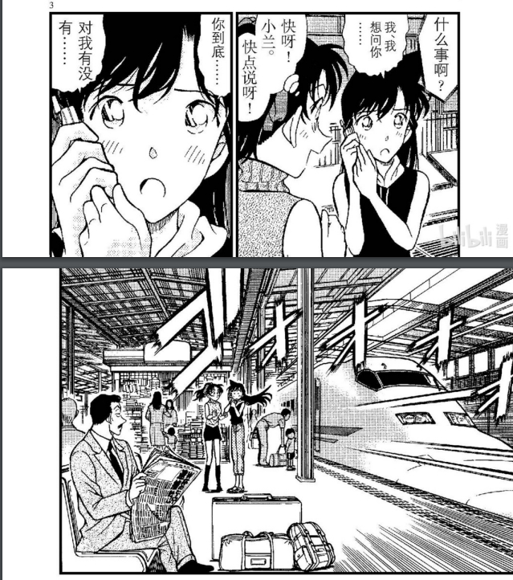
不光是火车，男方主动挂了电话，比较男人寻味……
而且到站的是26月台 14点56分的希望号。
众所周知，1代表新一，4代表志保，那么5和出现了两次的6呢？
而且到站的是26月台 14点56分的希望号。
众所周知，1代表新一，4代表志保，那么5和出现了两次的6呢？
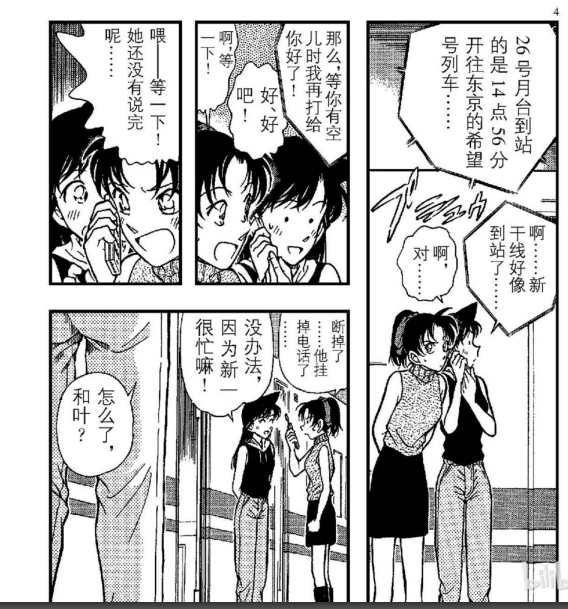
2024-03-16 06:19 | ☞坚硬如水☜:耐人寻味2024-03-16 09:26 | 云罗♤:打错字
回复 ☞坚硬如水☜ :2024-03-16 11:44 | 🍁傻敷敷的小颜:男人寻味
26是指m26？按道理来讲，剧场版因为疫情推迟一年，m26应该是m27五棱星才对，而在北斗列车篇章指向终点站是北海道的札幌……会不会是我想多了2024-03-16 16:15 | NCC74656Voyage:回复 🍁傻敷敷的小颜 :卧槽？你真是个天才！等五棱星上映2024-03-16 20:27 | feather034:回复 🍁傻敷敷的小颜 :不，m26就是m26，因为兔年是灰原哀年，倒是m27有可能是前面的2024-03-17 02:25 | ☞坚硬如水☜:回复 🍁傻敷敷的小颜 :应该不是 因为当时画这一话的时候是2000年 剧场版才出到M3，三部电影票房加一起也就是M26的零头。当时不可能想这么远。2024-03-18 03:44 | ☞坚硬如水☜:回复 NCC74656Voyage :应该不是M26 因为当时画这一话的时候是2000年 剧场版才出到M3，三部电影票房加一起也就是M26的零头。当时不可能想这么远。2024-03-19 00:05 | Elegy丶-:回复 feather034 :按照没推迟计算23年兔年小黑鱼应该是m27，所以m26应该是五棱星，也符合扑克牌m26红桃m27方片，m26五棱星26站台通往北海道。。。合理2024-03-28 21:42 | ☞坚硬如水☜:回复 Elegy丶- :应该不是M26 因为当时画这一话的时候是2000年 剧场版才出到M3，三部电影票房加一起也就是M26的零头，前景一般，属于小打小闹。当时不可能想这么远。2024-03-28 21:46 | Elegy丶-:回复 ☞坚硬如水☜ :所以我说小黑鱼本来应该是m27，和26没关系2024-03-31 02:49 | ☞坚硬如水☜:回复 Elegy丶- :OK

2
日语里的2基本上有两个读音，ni 和 futa
数字里面一般读ni
但是表示两个的，要读futa
比如两个人：
日语里的2基本上有两个读音，ni 和 futa
数字里面一般读ni
但是表示两个的，要读futa
比如两个人：
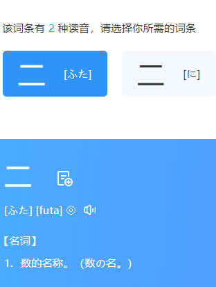
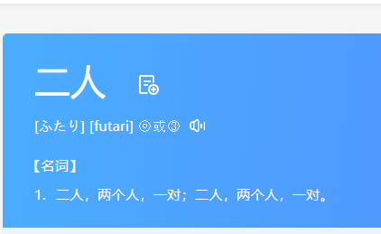
五
日语里也是两个读音， go 和 itsu (衣呲)
而学日语最基础的单词“永远” 就是这个衣呲开头的 いつまでも いつでも
衣呲嘛day某 衣呲day某
大家就算不会说日语，也在动画里面听过对不对？
日语里也是两个读音， go 和 itsu (衣呲)
而学日语最基础的单词“永远” 就是这个衣呲开头的 いつまでも いつでも
衣呲嘛day某 衣呲day某
大家就算不会说日语，也在动画里面听过对不对？
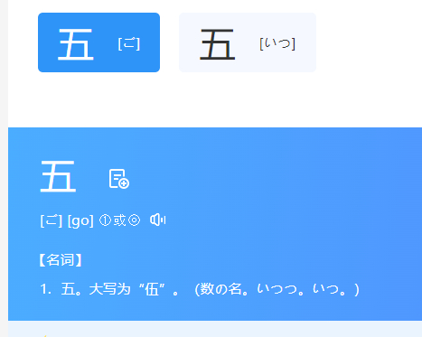
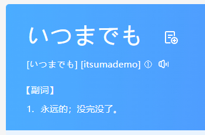
六
六有三个读音
最常用的是这个 roku 烙库
与英语里上锁 锁定的lock发音相近
甚至日语里也有这个词，烙（短短地顿一下）库
六有三个读音
最常用的是这个 roku 烙库
与英语里上锁 锁定的lock发音相近
甚至日语里也有这个词，烙（短短地顿一下）库
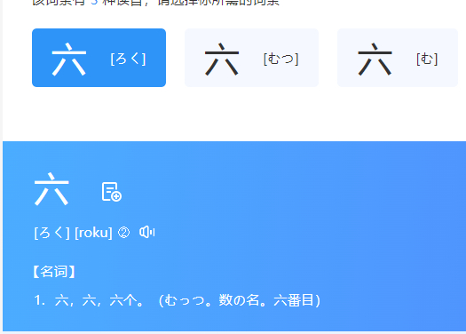
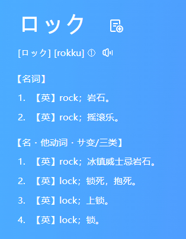
答案显而易见了
26 两个人锁定锁死
1456 新一志保永远锁定
兰啊，你问新一的心意是吧？不好意思，他在我青山刚昌的安排下是永远锁定在一起的！
是像高速火车一样永远GO（五的另一个发音）下去的！
他们两个才是真正的希望号！
26 两个人锁定锁死
1456 新一志保永远锁定
兰啊，你问新一的心意是吧？不好意思，他在我青山刚昌的安排下是永远锁定在一起的！
是像高速火车一样永远GO（五的另一个发音）下去的！
他们两个才是真正的希望号！
2024-03-16 10:11 | Some_exe:好家伙，激动起来了2024-03-22 06:44 | ☞坚硬如水☜:回复 Some_exe :一起激动吧

兰啊，你说我们都是日本人，才不说英语是吧？
那么6在日语里还读 mutsu 姆呲
而 姆呲开头 最简单最基础的单词就是 姆呲姆……
那么6在日语里还读 mutsu 姆呲
而 姆呲开头 最简单最基础的单词就是 姆呲姆……
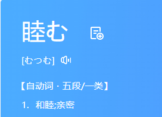
2024-03-16 06:02 | fireflyshen:五是小五郎，六好像是安室透的助手
另外，总第146话是作者表白前妻高山南的当红歌星事件
他把高山南的二人组合画进了漫画。
标题叫暗夜男爵夫人登场！大艾琳！ 好了 我的分析到此为止。
虽然小，但是很有趣，很符合老贼一贯的作风。
各位朋友以后看到6这个数字要注意了哦！看看还有什么别的发现？
他把高山南的二人组合画进了漫画。
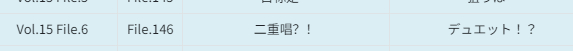
总第416话是英里和有希子问小五郎当年选校园女王投票投给谁那话标题叫暗夜男爵夫人登场！大艾琳！ 好了 我的分析到此为止。
虽然小，但是很有趣，很符合老贼一贯的作风。
各位朋友以后看到6这个数字要注意了哦！看看还有什么别的发现？
最后最后再说一个比较牵强的
这一话是第296话
9在日语里有个读音是 Q 和英语字母这个读音差不多
Q可以理解为Question 问题
296就是：这部作品里那两个人是真正的恋人呢？
答案不言自明。
兰啊，不管是直球还是曲线球都没有意义……
如果没有这火车打断你，你甚至连问的资格都没有啊！
因为你在上一话已经被 red card 红牌罚下了啊！
这一话是第296话
9在日语里有个读音是 Q 和英语字母这个读音差不多
Q可以理解为Question 问题
296就是：这部作品里那两个人是真正的恋人呢？
答案不言自明。
兰啊，不管是直球还是曲线球都没有意义……
如果没有这火车打断你，你甚至连问的资格都没有啊！
因为你在上一话已经被 red card 红牌罚下了啊！
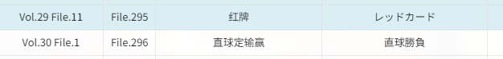
牛逼牛逼
2024-04-16 23:25 | ☞坚硬如水☜:哦耶
nb
可以！
可以
厉害
送你四个字：惊为天人！！！

绝！！！！！！！！！
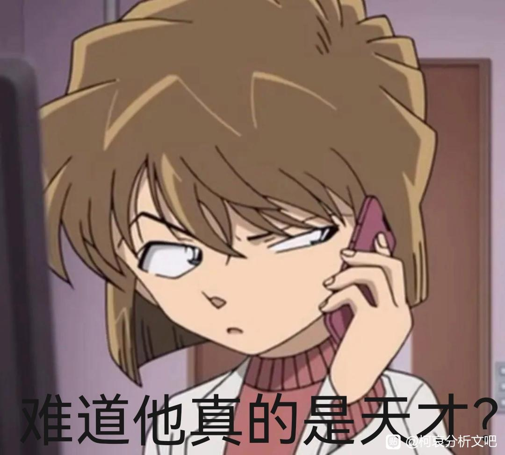
WC！天才
这里我直接告诉你，希望号=福星里面的nozomi=哀。
这里小兰电话里没问出来 再看“直球定输赢” 小兰这一球没打出去 也算输了吧
牛🤔